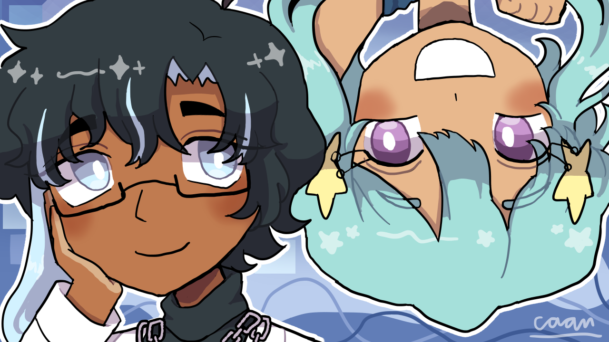

Liverblue District
Welcome to the official site of Liverblue District!
Site is compatible for portrait mobile and desktop view.
Update Log
- 29/09/2024 Nadia and Oxford's character page added.
- 28/09/2024 Added site favicon.
- 27/09/2024 Dividers on navigation bar removed, navbar text bolded. Beiming, Beatriz, and Chetan's character page added.
- 20/09/2024 Lina's character page added.
- 17/09/2024 Hetansh's character page added.
- 16/09/2024 Huaqing's character page added.
- 15/09/2024 About page's placeholder image replaced, added Techray to main gallery.
- 14/09/2024 Social media logos are replaced with their Liverblue District variant to fit the site's theme, "previous" and "next" button added to archive page's individual pages, added Huaqing has an Idea to side gallery.
- 13/09/2024 Worldbuilding page created and finished on the same day, homepage placeholder image replaced, first illustration on main gallery; Hydrocarbon added.
- 12/09/2024 Archive page is pretty much finished, characters page is created and also finished on the same day.
- 11/09/2024 Archive page is created.
- 10/09/2024 Homepage is pretty much finished, about page created and finished on the same day.
- 09/09/2024 Website along with the homepage are created.